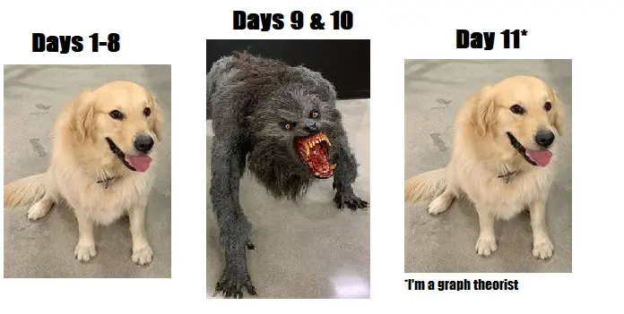
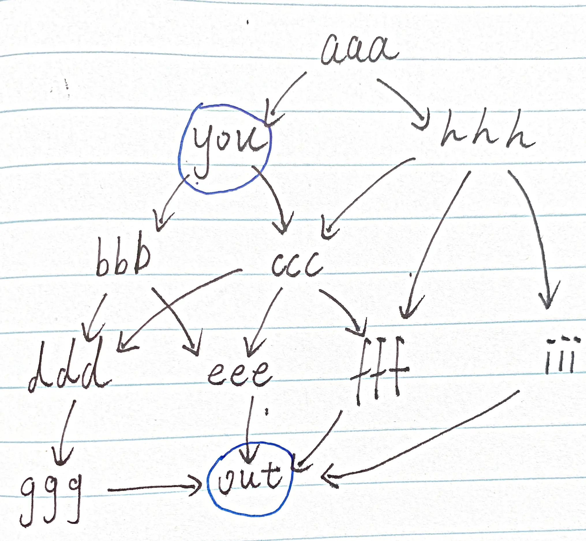
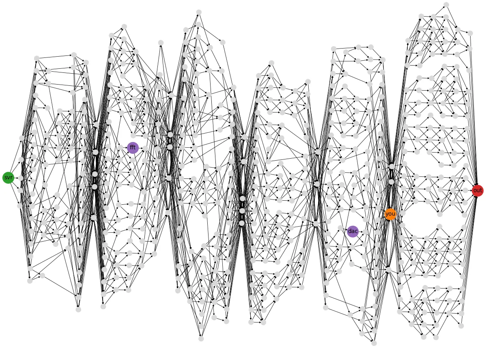

Advent of Code 2025 day11
{kind=link}

逛 reddit 的时候看到了 图 1，真是让人会心一笑呀！太真实了，哈哈哈。
day11 的输入是：
aaa: you hhh you: bbb ccc bbb: ddd eee ccc: ddd eee fff ddd: ggg eee: out fff: out ggg: out hhh: ccc fff iii iii: out
这是一张图， aaa: you hhh 表示的是，可以从 aaa 去往 you 或 hhh。每一行表示的都是单向的，即可以从 aaa 去到 you，但不能从 you 去到 aaa。
part1 的问题是，从 you 出发，渠道 out，总共有几条路径？
可以将输入绘制成一张图，就更容易找路径了：
{kind=link}

从 you 出发，可以去 bbb 或者 ccc，问从 you 到 out 有几条路，相当于问 bbb 到 out 有几条路、ccc 到 out 有几条路。
设 path(a->b) 表示 a 到 b 的路径数量，you 到 out 的路径数量可以表示成：
path(you->out) = path(bbb->out) + path(ccc->out) = path(ddd->out) + path(eee->out) + path(ddd->out) + path(eee->out) + path(fff->out) = path(ggg->out) + 1 + path(ggg->out) + 1 + 1 = 1 + 1 + 1 + 1 + 1 = 5
和 Advent of Code 2025 day7 的 part2 类似，可以把大的问题拆成更小的问题，直到知道确切的答案，可以写个递归解决。
观察上面的式子，发现有很多重复的部分，例如 path(ddd->out) 和 path(eee->out) 都被计算了两次，实现的时候增加记忆化，用一个哈希表记录已经被计算过的节点，避免重复计算，提高效率。
def count_path_to_out(graph, node, memo = None): if memo is None: memo = {} # 如果节点计算过了，直接返回计算结果 if node in memo: return memo[node] # 抵达 out，找到一条路径，返回 1 if node == 'out': memo[node] = 1 return memo[node] count = 0 next_paths = graph[node] # 遍历相邻的节点，累计到达 out 的路径数量 for path in next_paths: count += count_path_to_out(graph, path, memo) memo[node] = count return memo[node] count_path_to_out(graph, 'start')
增加记忆后，每个节点只需要计算一次，同时还需要遍历节点的所有相邻边，设 V 是节点数量，E 是边的数量，时间复杂度是 O(V + E)，是一个线性的时间复杂度。
如果没有记忆化，从起点到终点，设中间会经过 N 个点，每个点可能经过，也可能不经过（2 种选择），遍历所有的情况，时间复杂度可以达到 2 的 N 次方，是一个指数，有可能需要执行非常久才能得到结果。
part2 的输入是：
svr: aaa bbb aaa: fft fft: ccc bbb: tty tty: ccc ccc: ddd eee ddd: hub hub: fff eee: dac dac: fff fff: ggg hhh ggg: out hhh: out
这次是找从 svr 到 out 的路径，同时必须经过 fft 和 dac，先经过谁都可以。
例如 svr 到 out 的路径有：
svr,aaa, fft,ccc,ddd,hub,fff,ggg,out
svr,aaa, fft,ccc,ddd,hub,fff,hhh,out
svr,aaa, fft,ccc,eee, dac,fff,ggg,out <–
svr,aaa, fft,ccc,eee, dac,fff,hhh,out <–
svr,bbb,tty,ccc,ddd,hub,fff,ggg,out
svr,bbb,tty,ccc,ddd,hub,fff,hhh,out
svr,bbb,tty,ccc,eee, dac,fff,ggg,out
svr,bbb,tty,ccc,eee, dac,fff,hhh,out
其中只有 2 条路径是经过 fft 和 dac 的。
在 part1 中已经解决了找路径的问题了，只要在 part1 的基础上，判断路径上是否经过了 fft 和 dac 就好了。
说起来容易，但要怎么做呢？观察前 4 条路径：
svr,aaa, fft,ccc,ddd,hub,fff,ggg,out
svr,aaa, fft,ccc,ddd,hub,fff,hhh,out
svr,aaa, fft,ccc,eee, dac,fff,ggg,out <–
svr,aaa, fft,ccc,eee, dac,fff,hhh,out <–
从 svr 出发，它们都经过了 aaa ，但有效的只有后面两条经过了 fft 和 dac 的路径。
对于经过 aaa 的路径，可以分成 4 种：
- 经过 fft 且经过 dac (符合要求的路径)
- 经过 fft ，但不经过 dac
- 不经过 fft ，但经过 dac
- 不经过 fft 也不经过 dac
对于其他节点也是如此，需要在 part1 的基础上，区分这 4 种情况，并且为了避免重复计算，还需要对 4 种状况都增加记忆化处理。
def count_path_to_out_with_ftt_dac(graph, node, memo = None, fft_seen = False, dac_seen = False): if memo is None: memo = {} # 将 fft_seen 和 dac_seen 添加到 key 中，区分不同状态的 node key = (node, fft_seen, dac_seen) # 如果节点计算过了，直接返回计算结果 if key in memo: return memo[key] # 判断是否经过了 fft 和 dac fft_seen = node == 'fft' or fft_seen dac_seen = node == 'dac' or dac_seen # 抵达 out if node == 'out': # 当路径包含 fft 和 dac，找到一条符合的路径，返回 1 if fft_seen and dac_seen: memo[key] = 1 else: memo[key] = 0 return memo[key] count = 0 next_paths = graph[node] # 遍历相邻的节点，累计到达 out 的路径数量 for path in next_paths: count += count_path_to_out_with_ftt_dac(graph, path, memo, fft_seen, dac_seen) memo[key] = count return memo[key] count_path_to_out_with_ftt_dac(graph, 'svr')
day11 的 part1 是很简单的，因为 you 到 out 的路径很少，甚至不需要记忆化都能通过（一开始我就没加记忆化）。
当从 svr 出发，路径一下就多了，不加记忆化，代码都停不下来，要执行很久。
reddit 上有人做了路径的可视化， svr 到 out 的路径比 you 到 out 的路径多了很多。
{kind=link}

part2 最开始我不是那么做的，而是尝试拼接路径，然后判断 fft 和 dac 是否在路径上，但时间复杂度很高，后来也是问了 LLM 才知道问题。就算 LLM 告诉我可以如何实现，我也还是花了些时间去理解为什么要这样做记忆化。
最后总算弄明白了，希望下次碰到就能想起来吧～